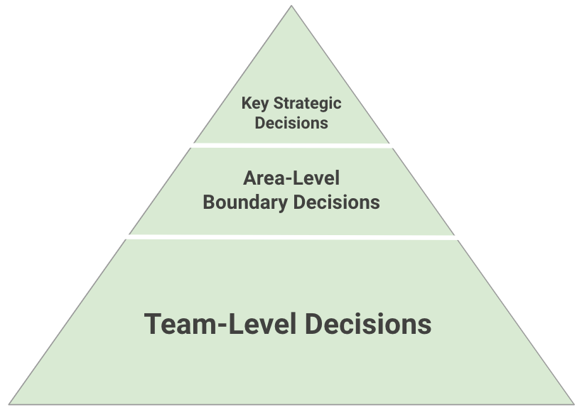
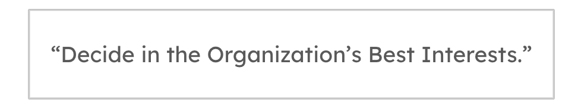

Operating Model: General Principles

IN THIS SECTION, YOU WILL: Understand what activities you can do as a part of an architecture practice and get tips on creating pragmatic operating models for an architecture practice.
KEY POINTS:
- The Operating Model is a system of processes and agreements enabling architects to do everything architecture typically does, leveraging Lightweight Architectural Analytics and Collaborative Networks to create a data-informed, organization-wide impact.
- Examples of activities include: supporting teams in their daily work; tracking tech debt; performing technical due diligence; standardizing processes and documentation; defining cloud, data, and platform strategies.
Each organization will have different architectural needs and contexts. When forming an architecture practice, I use as a starting point these two pieces of advice from Gregor Hohpe:
- “Your architecture team’s job is to solve your biggest problems. The best setup is the one that allows it to accomplish that.”
- “Your organization has to earn its way to an effective an architecture practice. You can’t just plug some architects into the current mess and expect it to solve all your problems.”
Considering Gregor Hohpe’s previous two points, I approach defining an architecture practice with the mindset that there is no one-size-fits-all method. You must find your own activities and operating models to enable architecture to solve the most critical problems.
No matter which operating models you select, it’s crucial to develop explicit agreements and “rules of engagement” with key stakeholders. This collaborative approach is essential to create a sustainable and practical an architecture practice.
 Figure 1: The Grounded Architecture framework: Operating Model.
Figure 1: The Grounded Architecture framework: Operating Model.
This section outlines some lessons I learned when defining IT architecture operating models. The Operating Model (Figure 1) is a part of the Grounded Architecture framework that defines a set of processes and agreements that allow architects to do everything an architecture practice typically does. The model should leverage Lightweight Architectural Analytics and Collaborative Networks to develop a data-informed, organization-wide impact. Lightweight Architectural Analytics and Collaborative Networks provide a basis for data-informed decision-making that is well-embedded in the organization.
Examples of Architecture Activities
An Operating Model enables a structured and strategic approach to an architecture practice within the organization.
Here are examples of the activities I have been engaged in with architects to provide a clearer understanding of what I mean by an operating model.
-
Designing Mechanisms for Teams to Make Better Decisions: These mechanisms involved creating global decision-support frameworks such as advisory forums facilitating informed discussions across teams. For compliance-sensitive projects, we establish formal design authorities. Additionally, we develop team-specific mechanisms, like escalation paths, to resolve decision conflicts effectively (e.g., when teams disagree on a common messaging middleware).
-
Supporting Teams in Their Daily Work: This support entailed integrating into key team activities and aligning architectural work with team rituals to provide timely support. We assisted teams during all critical phases, such as reviewing architecture proposals before the commencement of a project or sprint, ensuring alignment with overall architectural standards.
-
Supporting Planned New Initiatives and Projects: Ensuring seamless alignment between projects that require multi-team collaboration is crucial. We worked to facilitate communication and coordination, ensuring all teams are on the same page regarding project goals and requirements.
-
Supporting Teams in Dealing with the Legacy Landscape: We provided data and insights about the legacy landscape, identifying problematic areas such as frequently changed, low-quality, untested legacy code. We helped define scenarios and roadmaps for legacy modernization, ensuring a structured approach to updating and maintaining legacy systems.
-
Tracking Tech Debt and Defining Tech Debt Reduction Programs: This involves creating a centrally aligned backlog of technical debt and defining programs for its reduction. We integrate these programs into the planning processes to ensure that tech debt is managed proactively and effectively.
-
Performing SWOT and Other Analyses of Platforms and Systems: Conducting deep dives to understand specific areas of the technology landscape. We performed SWOT (Strengths, Weaknesses, Opportunities, Threats) analyses and other assessments. These analyses helped in creating comprehensive plans and roadmaps for improvement.
-
Standardizing Processes and Documentation: We defined standard templates for key documents such as Architectural Decision Records (ADRs), Technical Design Reviews (TDRs), and common diagrams. This standardization ensures consistency and clarity across all architectural documentation.
-
Supporting Merger and Acquisition (M&A) Activities with Expertise and Analyses: We provided analyses, recommendations, and integration planning for mergers and acquisitions. Such support ensures that architectural considerations are well-integrated into M&A activities, facilitating smoother transitions and integrations.
-
Defining Key Technology Strategies: We contributed to the development of essential technology strategies, including those for Cloud, Data, and Platforms. These strategies provide a clear roadmap for technological development and investment, ensuring alignment with business goals.
-
Defining Vision and Direction of Technology: In collaboration with Engineering Leaders, we created a sustainable organizational setting that aligns with the overarching technology strategies. This work involved setting a clear vision and direction for the technology landscape within the organization.
Guiding Principles for Architectural Excellence: Policies, Autonomy, and Engagement
In this section, I address different guiding principles of architectural work:
- Our operating framework always emphasizes a collaborative and supportive approach. Architects should empower development teams to make most decisions while ensuring strategic alignment and minimal compatibility. Architects should engage early in processes to avoid bureaucratic delays, focus on constant motion between daily support and strategic tasks, and use data to inform decisions.
- The distributed decision-making model promotes team autonomy complemented by high transparency and alignment, guided by principles that balance autonomy with global consistency.
- The “Golden Paths” concept enhances uniformity and efficiency.
High-Level Operating Framework
While exact activities and their scope will depend on an organization setting and will change over time, I usually followed a common operational framework in daily work inspired by Gregor Hohpe’s strategy-principles-decisions model (Figure 2).

Figure 2: A common operating framework I typically use for Grounded Architecture activities.
Here are the key characteristics of this operating framework:
Engagement mindset:
- Architects engage with stakeholders and teams in a collaborative and supportive manner.
- Architects aim to empower the teams so that they make most of the decisions.
Contributions of architects:
- Bring relevant data to inform decisions leveraging Lightweight Architectural Analytics.
- Define decision boundaries to enable minimal compatibility and strategic alignment (e.g., golden paths or tech stack constraints).
- Define fundamental principles to facilitate consistency in decision-making.
- Share and generalize lessons learned via Collaborative Networks.
Social dynamics of architects:
- Architects spend their time in constant motion between supporting teams’ daily work and working on strategic topics, helping the organization achieve alignment between strategy and implementation.
Shift left:
- Avoid formal bureaucratic approval processes, where architects appear too late and are frequently busy approving trivial decisions.
- Have architects involved early in any of the processes, such as during the planning and preparation stages, where it is possible to make more significant changes. Think of it as having the architects as early birds catching the architectural worms, making big changes before the day officially starts.
Distributing Decisions, Autonomy, and Alignment
With any operating model, I aim to keep architectural decision-making distributed across the organization and embedded in the development teams. Development teams traditionally have the best insights and most information relevant for making decisions. As noted by Gregor Hohpe, the worst case of organizational decision-making happens when people with relevant information are not allowed to make decisions, while people who lack sufficient information make all decisions. Grounded Architecture aims to make relevant information more readily available to a broader audience and better connect people when making decisions.
While I aim to create a mechanism to give teams autonomy, autonomy does not mean that teams are alone, do not align with anyone, do not get feedback from anyone, and do whatever they want. Teams must complement autonomy with high transparency and proactivity in alignment with other groups.
I have sometimes implemented the concept of a decision pyramid (Figure 3) to give the teams maximal autonomy while maintaining a minimal level of global alignment and compatibility.
The decision pyramid highlights that development teams should make most decisions. However, several strategic and area-level choices may provide team decision boundaries. For example, selecting the public cloud provider is typically a CTO-level strategic decision. Similarly, engineering leaders in some areas may want to limit some choices, such as the number of programming languages, to more easily train new people, maintain code, and support moves between teams.
 Figure 3: A decision pyramid. The development teams should make most decisions. However, several strategic and area-level decisions may provide decision boundaries for teams (e.g., golden paths or tech stack constraints).
General Architecture Decision Policy
Distributed decision-making scales well, but it can lead to chaos if entirely uncoordinated. Some decision policies are needed. Inspired by the famous Netflix expense policy, “Act in Netflix’s best interests”, I frequently argued that architecture decision policy could similarly be summarized in six words: “Decide in the Organization’s Best Interests.”

What I mean by that is that anyone can make architecture decisions, provided that, in addition to their specific requirements, they also think about the impact of their choices on:
- Overall organizational complexity: Technology is more manageable by limiting tech diversity, size, and dependencies. Limiting technology choices reduces the attack surface with fewer third-party dependencies and tool ecosystems (build, testing, etc.).
- Ease of moving people between teams (both to get help and help others): Do not unnecessarily create exotic islands with few experts in technologies not supported or widely used in the organization. People cannot get help or move across the organization as their expertise may be useless outside the team.
- Ease of training and onboarding of internal and external developers: Using conventional technologies supported by external learning resources (e.g., books, tutorials) significantly helps find and grow experts.
- Talent density and the possibility of performing at the world-scale level: Building world-scale technology and scaling requires in-depth knowledge and fine-tuning. You cannot achieve it with only a few in-house experts.
- New reorganizations: If the ownership of components changes (e.g., another team is taking it over), would your choices fit with other components from other areas?
- Reducing global duplication of effort and inefficiencies: Are you doing the work others are doing? Can others reuse your work? Can you reuse the work of others?
While it may not always be enough, this simple policy can resonate well with many people and can encourage them to be more thoughtful when making decisions.
Golden Paths
I have found that the concept of Golden Paths provides an excellent ground to drive alignment and collaboration in architecture activities. Golden Paths is an approach utilized to streamline and unify the development process within a software ecosystem, aiming to tackle fragmentation and foster consistency, inspired by Spotify’s implementation. Golden Paths can be described as “opinionated and supported” routes developers can follow to build systems efficiently and effectively.
Golden paths provide a solid foundation for aligning architecture activities, serving as a common target of work for Guilds and central architectural teams. Rather than being solely knowledge-sharing entities, guilds can be empowered to develop golden paths, serving as an excellent catalyst for more effective community engagement. This approach not only enhances the role of guilds but also increases the adoption of golden paths as they are created collaboratively.
Golden Paths can be crucial to an organization’s IT development landscape as a deliberate and strategic effort to promote uniformity, efficiency, and reliability. By advocating for a set of preferred technologies and practices that are well-supported, secure, and aligned with the organization’s broader objectives, Golden Paths can guide developers to build less fragmented, and faster-to-develop software. Ultimately, this leads to higher-quality and more maintainable IT systems.
Embracing Diversity
When building architecture guilds and virtual architecture teams, it’s crucial to acknowledge that organizational units have diverse structures and sizes. In big organizations, embracing diversity is a prerequisite to having a broad impact.
There is no one-size-fits-all solution for assigning architecture responsibilities within departments. Based on Gregor Hohpe’s view of architects and their teams’ relationships, I’ve generally encountered three types of team-architect systems:
-
Benevolent “dictator”: An architect or architecture team tells developers what to do or how to do things. The key nuance here is whether the communication is unidirectional or bi-directional.
-
Primus inter pares (first among equals): Architects are embedded within teams where each is just another team member, but with a focus on the system structure and trade-offs and taking a longer-term view than other team members.
-
Architecture without architects: Architecture is done within teams, but the task is a shared responsibility among multiple (or all) team members. This approach is often the preferred model in modern technology organizations.
Remember, there is no magic bullet. Different structures work for various organizations; sometimes, the best solution is a mix of these approaches.
Setting Boundaries
One of the amusing challenges with setting up an architecture practice in an organization is that everyone seems to have a different idea of what “architecture” should entail. It’s like asking people to describe a unicorn: some imagine a mythical, majestic creature, while others picture a sparkly horse with a horn that grants wishes. Good architects can do many things, but this versatility might not always be the most effective way to support the organization. We need to set boundaries so that we can focus on what’s important rather than becoming frazzled by what’s not.
To be effective, I’ve found it crucial to establish and clearly communicate some “rules of engagement” (ROE). Think of ROE as the office playbook for how architects should operate. In a corporate setting, ROE are the principles that guide how employees and departments interact with each other, clients, and stakeholders. This includes communication protocols, decision-making processes, and conflict-resolution mechanisms. Essentially, ROE sets the stage for what’s expected and what’s not, ensuring everyone plays nicely and fairly.
While you may need to tailor these rules to fit your organization, I found it helpful to set expectations for what the team should be able to do to qualify for the architecture support. Here’s a handy list of expectations for teams seeking architecture support. This also helps clarify what an architecture practice isn’t supposed to do:
-
Organizational Awareness and Connections: Teams should know all relevant stakeholders and actively engage with them. This knowledge should include product, development, and business stakeholders. Planning should be collaborative across all affected teams, with active working relationships with global functions like QA, DevOps, or Security.
-
Enough Capacity and Skills: Teams should have adequate development capacity with the right skills and seniority to innovate and maintain their products.
-
Strategic Awareness: Teams should understand the organization’s strategic goals, technologies, and other relevant strategies, and know their role within these frameworks.
-
Technical Documentation Literacy: Teams should be capable of creating technical documentation, such as ADRs (Architecture Decision Records) or RFCs (Request for Comments).
-
Technology Standard Awareness: Teams should be familiar with the organization’s technology standards, including golden paths and guidelines for planning, documentation, security, DevOps, and QA processes.
-
Participation and Citizenship: Teams should actively participate in relevant communities (like architecture guilds) and global events (such as architecture summits).
-
Tech Debt Management: Teams must be aware of the technical debt they create and maintain, ideally having a tech debt backlog and a plan for “paying” it back.
Aligning on these rules with the teams helps ensure productive conversations about architectural support. When these conditions are met, an architecture practice can help teams level up. When they’re not, architecture support can’t be as effective. However, that doesn’t mean struggling teams are left in the lurch. Architecture can help teams meet these expectations but can’t compensate for their total lack. Teams need to take the initiative and lead. For instance, it’s impractical to have architects working full-time for months with one team as their senior developer. However, architects can coach and help developers grow which is a more scalable appraoch. Similarly, architects can assist in building relationships with other teams, but the teams themselves need to be active and engaged.
So, set those expectations, establish your rules of engagement, and watch as your an architecture practice goes from a sparkly unicorn to a well-oiled machine!
To Probe Further
- Scaling the Practice of Architecture, Conversationally, by Andrew Harmel-Law, 2021
- Scaling Engineering Teams via RFCs: Writing Things Down, by Gergely Orosz, 2022
- Transformation Agents: An Engagement Model, by Gregor Hohpe, 2022
- Would you like architects with your architecture?, by Gregor Hohpe, 2021
Questions to Consider
Your an architecture practice job is to solve the biggest problems in your organization. Ask yourself the following questions:
- How can you identify the most critical problems that your architects need to solve in your organization?
- What activities and operating models can you think of that will best enable architecture in your organization to work on these critical problems?
- What does the Operating Model look like in your organization, and how could it be improved?
- Which of the provided examples of architectural activities are you currently performing in your organization?
- How does the proposed common operating model align with your current operational practices in your organization? What changes might be necessary to adopt this model?
- In your experience, how early are architects involved in projects and activities? Do you agree with the goal of ‘shifting left’ the architecture work?
- How are architectural decisions distributed across your organization currently? How could this process be improved to ensure the people with the most relevant information make the decisions?
- How could you better implement a mechanism to give teams autonomy while maintaining alignment and compatibility with global strategy?
- How does the concept of a decision pyramid resonate with you?
- Which strategic and area-level decisions provide team decision boundaries in your organization? Are there areas where you need more or less limitations to optimize performance?
Grounded Architecture Framework ← Collaborative Networks |
Grounded Architecture Framework Cooperation-Based Operating Model: Six Simple Rules → |